Étude hydraulique · Camping Bon Port
Dossier Loi sur l'Eau, diagnostic des risques d'inondation et cartographie SIG LiDAR HD pour un établissement de plein air à Lunel.
Ingénieur hydraulicien à Montpellier, je fais le diagnostic de votre terrain, je le cartographie par drone et SIG, et je vous dis où agir. Pour les campings, les collectivités et les propriétaires du Sud de la France.
Érosion du trait de côte et submersion lors des tempêtes : suivi par drone, lecture du PPRL, mesures adaptées à votre terrain. Crues et ruissellement : zones exposées, cotes de référence du PPRI, plan d'alerte et d'évacuation. Abords boisés : obligations de débroussaillement, cartographie du site, mise en sécurité des installations. En savoir plus
Alexis Camand, ingénieur hydraulicien formé à l'Université de Montpellier, a fondé Littor'eau : un cabinet indépendant en hydraulique, risques côtiers et cartographie SIG.
Du diagnostic terrain à la modélisation, du LiDAR HD au drone : une expertise complète, réactive, ancrée dans le Sud de la France.
Un seul interlocuteur du premier échange au rendu final : pas d'intermédiaire hiérarchique, une structure assez souple pour traiter aussi bien la demande d'une collectivité que celle d'un camping ou d'un propriétaire privé.
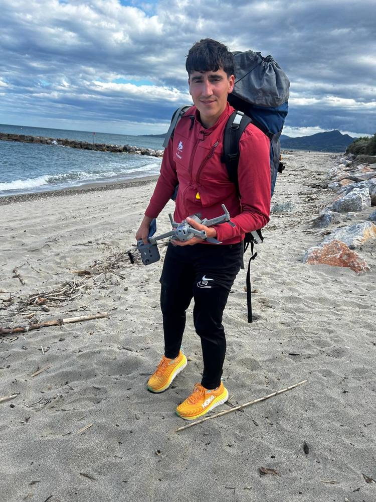
Des prestations techniques précises, livrées avec clarté, pour des clients qui n'ont pas besoin de jargon mais de solutions.
Modélisation des écoulements sous HEC-RAS, cartographie des zones inondables, diagnostics de vulnérabilité des enjeux exposés. Appui réglementaire pour les dossiers PPRI, GEMAPI et PAPI.
Érosion du trait de côte, submersion marine, dynamiques littorales et sédimentaires. Études réglementaires PPRL et suivi morphologique du littoral dans la durée.
Les incendies déstabilisent les bassins versants et accélèrent l'érosion en aval. Étude de propagation (vent, pente, végétation, historique Prométhée) et diagnostic de conformité OLD.
MNT haute résolution à partir de LiDAR HD IGN, cartographie d'aléas naturels, orthophotos et analyses spatiales sous QGIS pour l'aide à la décision.
Photogrammétrie aérienne, modèles 3D et orthophotos haute précision, pour les littoraux, zones humides et sites difficiles d'accès.
Profils de plage et suivi du trait de côte sur transects fixes, bathymétrie légère en zone peu profonde, analyses sédimentaires (granulométrie, dérive littorale). Une méthodologie éprouvée sur le terrain corse pendant 5 mois.
Rédaction de cahiers des charges et montage de dossiers Loi sur l'Eau, PPRI/PPRL. Interface technique entre collectivités, bureaux d'études et services de l'État.
Interventions de sensibilisation auprès des élus, des équipes techniques et des lycées. Risques naturels et littoraux vulgarisés, adaptés à chaque public.
Étude hydrogéologique préalable et pilotage d'une prospection géophysique pour localiser la ressource avant tout forage. Montage du dossier loi sur l'eau, suivi de chantier confié à un foreur certifié Qualiforage.
Des acteurs publics et privés qui ont besoin d'une expertise technique accessible, réactive et ancrée dans le territoire.
Communes, intercommunalités, syndicats de rivières. GEMAPI, PAPI, diagnostics territoriaux.
Sous-traitance et partenariat hydraulique, SIG et modélisation.
Diagnostics vulnérabilité, plans d'évacuation, sensibilisation.
Expertise sinistres, évaluation aléas, analyse foncière en zone à risque.
Diagnostic de vulnérabilité pour un bien exposé à l'érosion, la submersion ou l'incendie, avant travaux ou décision.
Des projets concrets, des livrables réels.
Dossier Loi sur l'Eau, diagnostic des risques d'inondation et cartographie SIG LiDAR HD pour un établissement de plein air à Lunel.
Cinq mois de suivi quotidien sur 7 km de littoral : profils de plage, photogrammétrie drone, bathymétrie et analyses sédimentaires, avec la mairie. Sensibilisation des campings exposés.
Voir le terrain en imagesDiagnostic d'un camping exposé à l'érosion, réalisé pendant la Marche Méditerranée : constat sur site et recommandations remises à l'exploitant.
L'offre campingsInterventions régulières en classe sur les risques hydrauliques et littoraux. Conférence en amphithéâtre devant des Terminales pendant la Semaine des Sciences, en février 2025.
Ghisonaccia, Haute-Corse, 2024–2025 : profils de plage, drone, bathymétrie, sédimentologie, suivi du trait de côte sur 7 km.
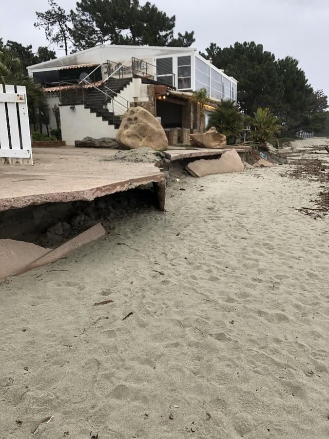
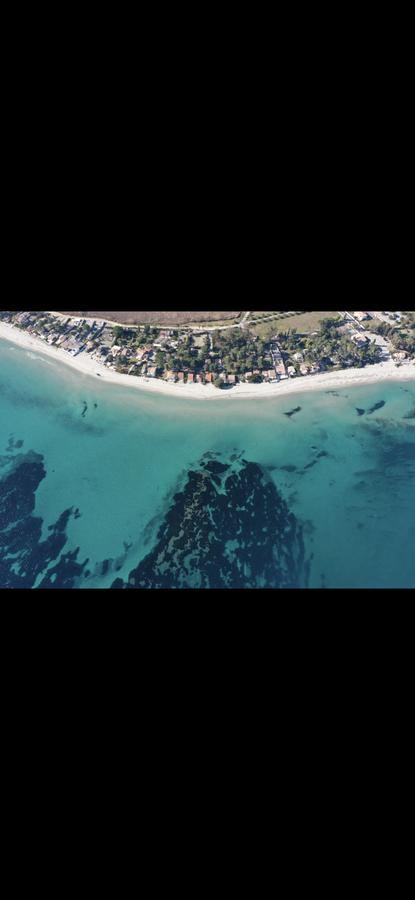
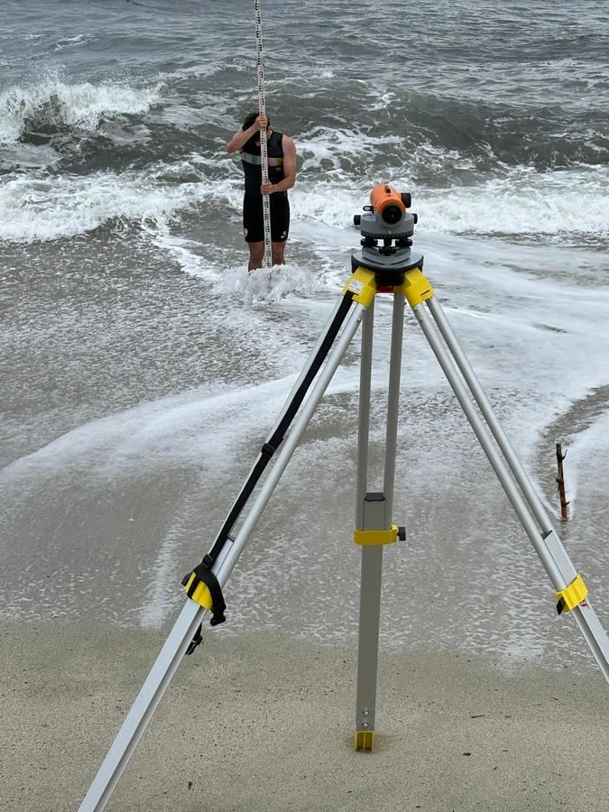
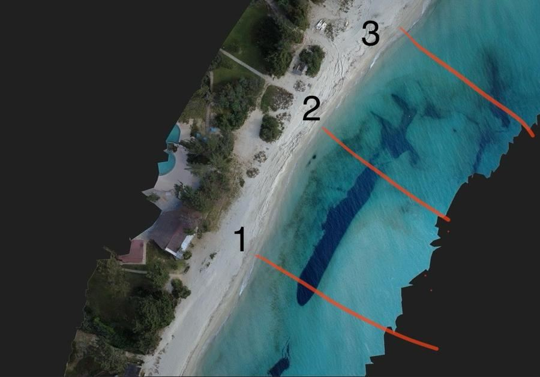
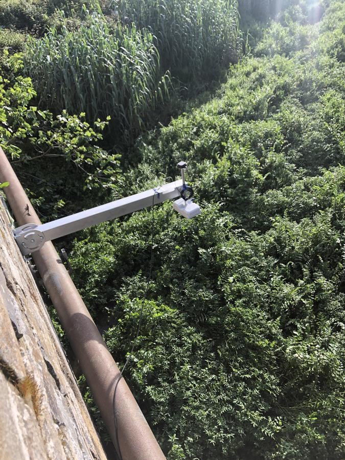
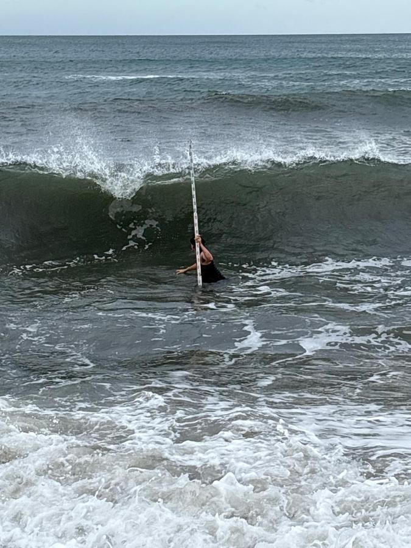
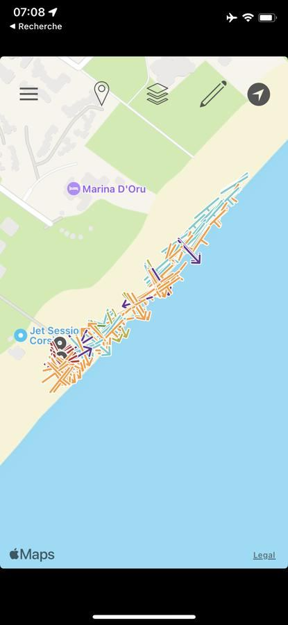
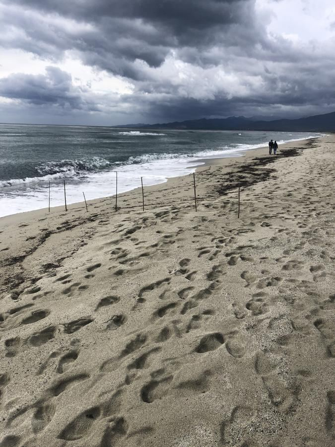
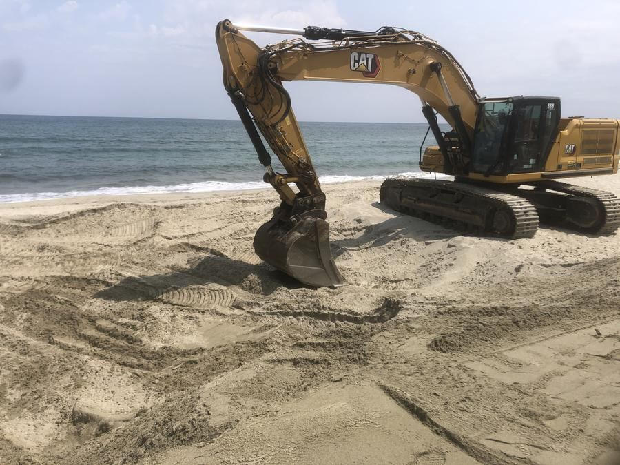
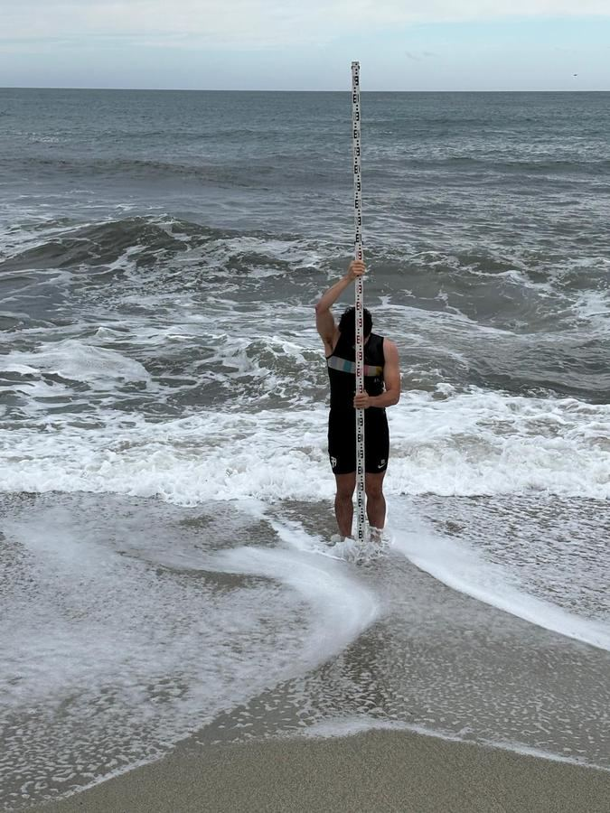
Ce qui a été mis au point en Haute-Corse s'applique aujourd'hui à chaque diagnostic : mesurer sur place, croiser les données, rendre un résultat utilisable par le décideur.
5 mois de profils de plage quotidiens, bermes et scarpes mesurées, géoréférencées via l'appli Clino.
Vols drone exploitables sous QGIS, bathymétrie kayak jusqu'à 60 m : barres sableuses et herbiers de posidonie localisés.
Prélèvements sur 7 km : granulométrie, susceptibilité magnétique (37–235 µS), ICP-MS. Dérive du sud vers le nord confirmée 9 jours sur 10.
Stage à la Mairie de Ghisonaccia : travail avec les élus sur érosion et posidonie, résultats intégrés à la décision communale.
Du 11 mai au 7 juin 2026, de Port-Bou à Vintimille, tout le littoral méditerranéen français parcouru à pied pour observer sur place l'érosion côtière et la submersion marine.
De la Côte Vermeille à la Côte d'Azur, en passant par le Languedoc, la Camargue et la Provence : chaque journée de marche a aussi été une journée de relevés, avec le drone, les carnets de terrain et la caméra.
Concrètement : une note d'avis technique remise à un camping littoral exposé à l'érosion, dès le terrain. Voir l'étude de cas
Ce que j'en retiens : chaque plage a sa propre dynamique, et les bonnes décisions se prennent avec des mesures faites sur place. C'est le lien que Littor'eau fait entre la donnée scientifique et la décision locale.
Échanger sur les données récoltéesPhotogrammétrie, orthophotos, MNT des zones côtières traversées.
Données de terrain versées en open-source sur littor-eau.fr
Lycées et collèges sensibilisés de Port-Bou à Vintimille.
LinkedIn, Instagram et YouTube. La science littorale rendue accessible.
De Cerbère à Menton, des établissements, des mairies et des campings ont suivi la Marche Méditerranée. Les échanges continuent depuis.
Le Sud de la France concentre les territoires les plus exposés aux risques naturels : crues éclair, submersion marine, érosion du littoral.
J'y connais les acteurs locaux, les services instructeurs et les dynamiques hydrauliques. La Marche Méditerranée 2026 le confirme.
Cartographie, modélisation, rapports : aussi réalisables à distance, sur tout le territoire national.
Littor'eau, cabinet indépendant fondé par Alexis Camand, ingénieur hydraulicien basé à Montpellier. Il réalise des études d'érosion du trait de côte et de submersion marine pour des collectivités, des campings et des gestionnaires de sites exposés sur le littoral méditerranéen (Occitanie, PACA, Corse).
Un diagnostic de conformité aux Obligations Légales de Débroussaillement (OLD), qui évalue le risque de propagation d'un feu de forêt (vent, pente, végétation, historique via la base Prométhée) autour d'un établissement situé en zone boisée classée.
Le PPRI (Plan de Prévention des Risques d'Inondation) couvre le risque fluvial ; le PPRL (Plan de Prévention des Risques Littoraux) couvre l'érosion côtière et la submersion marine. Littor'eau intervient en appui réglementaire sur les deux types de dossiers.
Oui : photogrammétrie aérienne, modèles 3D et orthophotos haute précision, notamment sur les littoraux et zones humides difficiles d'accès, en complément des données LiDAR HD IGN traitées sous QGIS.
La zone d'intervention principale est le Sud de la France (Occitanie, PACA, Corse), où Alexis Camand connaît le terrain et les services instructeurs locaux. Cartographie, modélisation et rapports peuvent aussi être réalisés à distance sur le reste du territoire national.
Une expédition de terrain menée par Alexis Camand du 11 mai au 7 juin 2026 : 1 000 km à pied en 28 jours, de Port-Bou à Vintimille, pour documenter sur place l'érosion côtière et la submersion marine sur tout le littoral méditerranéen français, avec relevés drone, cartographie SIG et plus de 40 rencontres avec des acteurs locaux.
Un diagnostic, une étude, une question sur votre site ? Je vous réponds sous 24h.
Déjà engagé : deux campings partenaires dans l'Hérault et les Pyrénées-Orientales, des missions documentées dans les références, et des échanges ouverts avec plusieurs mairies du littoral.
Besoin d'une réponse plus rapide ? Appelez directement